Apache NetBeans
Apache NetBeansLatest release
NetBeans Platform Selection Tutorial Using Maven
| This tutorial needs a review. You can edit it in GitHub following these contribution guidelines. |
This document demonstrates how to create a NetBeans Platform Module Suite from Maven archetypes and build and install the suite in your installation of the IDE. In this tutorial you will create a Maven module suite project that contains three NetBeans modules as sub-projects. The Maven project that contains the sub-projects is a simple POM project that declares how the suite is compiled and the installation target.
This document is based on the Ant-based NetBeans Selection Management Tutorial and illustrates some of the differences between using Ant and Maven to develop NetBeans Platform module suites. After you understand some of the differences, you can easily proceed through other tutorials on the the NetBeans Platform Learning Trail.
| You do not need to download Maven because it is bundled with the IDE. Optionally, use your own download of Maven, in which case use the Options window to configure your Maven settings. |
| This is not a beginners tutorial. Before starting this tutorial, it is important that you familiarize yourself with the following introductory Maven documentation: |
Creating the NetBeans Platform Application
In this section you use the New Project wizard to create a NetBeans Platform Module Suite from a Maven archetype. The wizard will create a POM project that will contain the module projects. In the wizard you will also create a module as a sub-project of the suite.
-
Open the New Project wizard and select NetBeans Application in the Maven category:
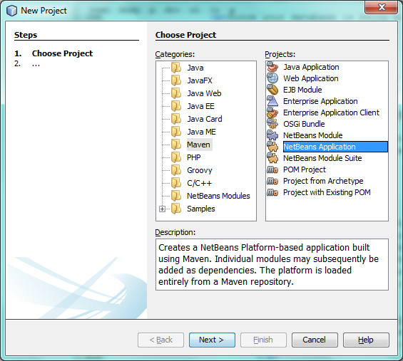
Figure 1. Screenshot of Projects window
Click Next.
-
Type MavenSelectionSuite for the Project Name:
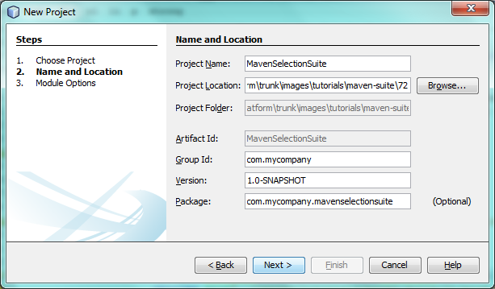
Figure 2. Screenshot of Projects window
Click Next.
-
Choose the NetBeans API version you want to use. Select Create Module Project and type MyAPI for the module name:
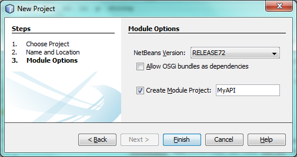
Figure 3. Screenshot of Projects window
Click Finish.
When you click Finish, the IDE creates a Maven reactor project, together with subprojects for branding, NetBeans Platform application actions, and the API module:
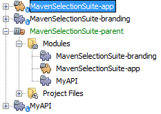
Figure 4. Screenshot of Projects window
MavenSelectionSuite-parent is a reactor project which is a container for sub-projects, in this case NetBeans Module projects. The reactor project does not contain any source files. As you can see from the screenshot above, the reactor provides a list of the modules that will be included when you build the project. You can see that the MyAPI project is listed as one of these modules.
Creating an API
You created the MyAPI module when you created the module suite, but now you need to create a class in the module and expose the class to other modules.
Creating a Class in the MyAPI Module
In this exercise you will create a simple class named Event . Each instance of Event will be unique because the field index is incremented by 1 each time a new instance of Event is created.
-
In the
com.mycompany.mavenselectionsuitepackage, create a new Java class named Event.
-
Modify the class to declare the following fields and getters:
package com.mycompany.mavenselectionsuite;
import java.util.Date;
public final class Event {
private final Date date = new Date();
private static int count = 0;
private final int index;
public Event() {
index = count++;
}
public Date getDate() {
return date;
}
public int getIndex() {
return index;
}
public String toString() {
return index + " - " + date;
}
}Exposing the Package
In this tutorial you will create additional modules that will need to access the Event class. In this exercise, you will make the contents of the package that contains the Event class public so that other modules can access it. To declare the com.mycompany.mavenselectionsuite package as public, you will modify the configuration element of nbm-maven-plugin in the POM to specify the packages that are exported as public. You can make the changes to the POM in the editor or by selecting the packages to make public in the project’s Properties window.
-
Right-click the MyAPI project node and choose Properties to open the Properties window.
1. Select the com.mycompany.mavenselectionsuite package in the Public Packages category:
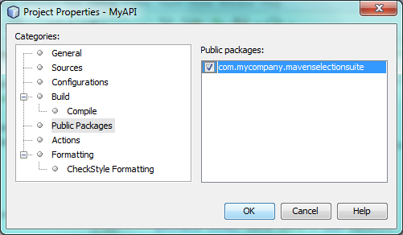
Figure 5. screenshot
Click OK.
When you select a package to export, the IDE modifies the nbm-maven-plugin element in the MyAPI module’s POM to specify the package:
<plugin>
<groupId>org.codehaus.mojo</groupId>
<artifactId>nbm-maven-plugin</artifactId>
<extensions>true</extensions>
<configuration>
<publicPackages>
*<publicPackage>com.mycompany.mavenselectionsuite</publicPackage>*
</publicPackages>
</configuration>
</plugin>-
Right-click the project and choose Build. When you build the project, the
nbm-maven-pluginwill generate a manifest header in theMANIFEST.MFof the JAR, to specify the public package:
Manifest-Version: 1.0
Archiver-Version: Plexus Archiver
Created-By: Apache Maven
Built-By: geertjan
Build-Jdk: 1.7.0
OpenIDE-Module-Localizing-Bundle: com/mycompany/mavenselectionsuite/Bu
ndle.properties
OpenIDE-Module-Specification-Version: 1.0
OpenIDE-Module-Implementation-Version: 1.0-20111222
OpenIDE-Module-Build-Version: 201112221054
OpenIDE-Module: com.mycompany.MyAPI
*OpenIDE-Module-Public-Packages: com.mycompany.mavenselectionsuite.**
OpenIDE-Module-Requires: org.openide.modules.ModuleFormat1
OpenIDE-Module-Display-Category: com.mycompany
OpenIDE-Module-Name: MyAPI
OpenIDE-Module-Short-Description: <undefined>
OpenIDE-Module-Long-Description: <undefined>
OpenIDE-Module-Module-Dependencies: org.netbeans.api.annotations.commo
n/1 > 1.10.1For more information, see the nbm-maven-plugin manifest documentation.
Listening to the Selection
In this section you will create a new module named MyViewer and add a window component and two text fields. The component will implement LookupListener to listen for changes to the selection.
Creating the Module
In this exercise you will create the MyViewer NetBeans module in the MavenSelectionSuite directory.
-
Choose File > New Project from the main menu (Ctrl-Shift-N). Select NetBeans Module from the Maven category:
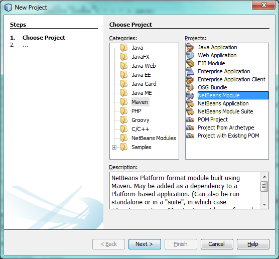
Figure 6. screenshot
Click Next.
-
Type MyViewer as the Project Name. Make sure to set the Project Location to the
MavenSelectionSuitedirectory:
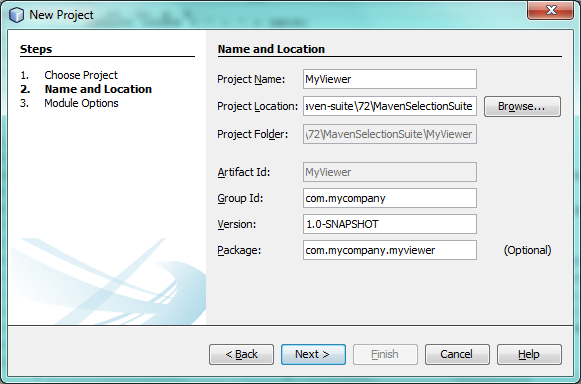
Figure 7. screenshot
-
Click Next. Select the NetBeans API version you’d like to use:
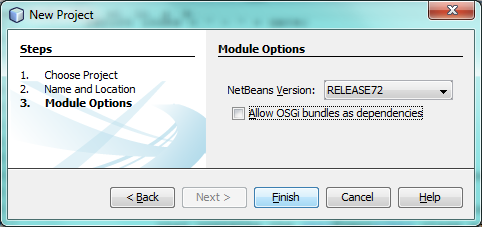
Figure 8. screenshot
Click Finish.
-
The new module is created within the parent project, which is a Maven reactor. Therefore, it becomes part of the reactor build. However, the new module is not yet part of the app project. Right-click the Dependencies node in the app project and choose Add Dependency:
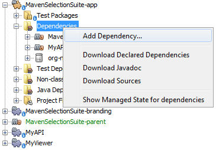
Figure 9. screenshot
-
Select the MyViewer module in the Open Projects tab:
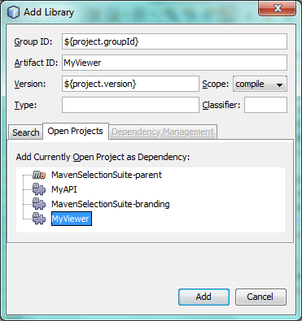
Figure 10. screenshot
-
When you click Add above, the IDE adds the MyViewer module to the list of dependencies of the app project. You can see the new dependency in the POM of the app project module and displayed as a new node under the Dependencies node of the app project:
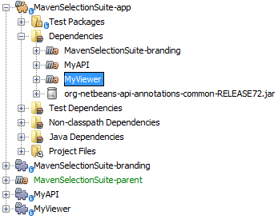
Figure 11. screenshot
-
The module is going to use the API module, therefore we need to set a dependency in the viewer module on the API module. Right-click the Dependencies node in the MyViewer project and choose Add Dependency:
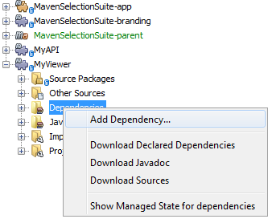
Figure 12. screenshot
-
Select the MyAPI module in the Open Projects tab:
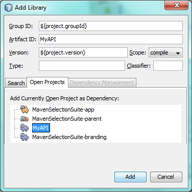
Figure 13. screenshot
-
When you click Add above, the IDE adds the API module to the list of dependencies of the MyViewer module. You can see the new dependency in the POM of the MyViewer module and displayed as a new node under the Dependencies node of the MyViewer module:
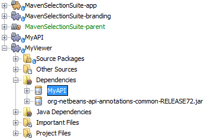
Figure 14. screenshot
You’ve now learned how to create a new module in your application and you’ve also learned how to set dependencies between your modules. Once a dependency has been set, a module can use the publicly exposed classes of the modules it depends on.
Creating the Viewer Window
In this exercise you will create a GUI component in your viewer module. The data displayed in the GUI component will be retrieved from the Lookup. That means you will learn how to listen to the selection and how to update your GUI component whenever an object of interest is published into the Lookup.
-
Right-click the MyViewer project and choose New > Window. Select explorer and select Open on Application Start:
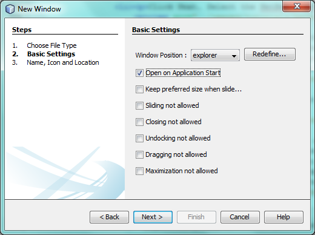
Figure 15. screenshot
Click Next.
-
Type MyViewer as the Class Name Prefix:
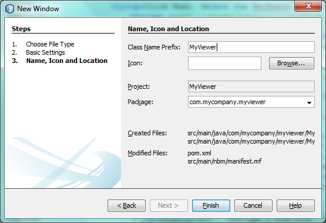
Figure 16. screenshot
Click Finish. You should see you have a new NetBeans Platform window component ready to be designed within the Matisse GUI Builder:
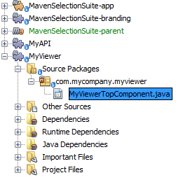
Figure 17. screenshot
-
Drag two Labels from the Palette into the window component:
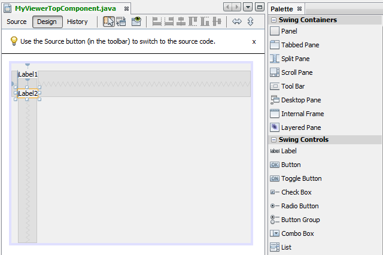
Figure 18. screenshot
-
You are now going to listen to the global context, provided by the NetBeans Lookup, for Event objects. Right now, no Event objects will be present in the global context. However, in the next section, we will create a new module that will publish Event objects.
Click the Source tab and modify the class signature to implement LookupListener :
public class MyViewerTopComponent extends TopComponent *implements LookupListener* {Add the following private field result and set the initial value to null.
private Lookup.Result<Event> result = null;Implement the LookupListener’s "resultChanged" method as follows:
@Override
public void resultChanged(LookupEvent le) {
if (!result.allInstances().isEmpty()) {
for (Event event : result.allInstances()) {
jLabel1.setText(Integer.toString(event.getIndex()));
jLabel2.setText(event.getDate().toString());
}
} else {
jLabel1.setText("[no selection]");
jLabel2.setText("");
}
}Make the following additions to the componentOpened() and componentClosed() methods that have already been created in the class by the New Window wizard:
@Override
public void componentOpened() {
*result = Utilities.actionsGlobalContext().lookupResult(Event.class);
result.addLookupListener(this);*
}
@Override
public void componentClosed() {
*result.removeLookupListener (this);*
}Note. By using Utilities.actionsGlobalContext() , each time the window is opened, the window listens to the global context for Event objects. Whenever a new Event is published into the global context, the resultChanged method is automatically triggered to handle the event.
Make sure to import the correct Event class, that is, com.mycompany.mavenselectionsuite.Event .
Publishing a Selected Object
In this section you will create a new module called MyEditor. The module will contain a TopComponent that will publish instances of the Event object into the Lookup of the TopComponent. When the user selects the TopComponent, the objects in its Lookup will be available globally. Once published globally, the viewer window created in the previous section, which is listening for Events in the global Lookup, will automatically update itself.
Creating the Module
In this exercise you will create a NetBeans module in the MavenSelectionSuite directory and add a dependency on the MyAPI module.
-
As you did in the previous section, create a new module in the parent folder. Type MyEditor as the Project Name.
-
As you did in the previous section, you need to add the MyEditor module as a dependency of the app project, so that it will be deployed when you run the application.
-
As you did in the previous section, you need to add a dependency on the API module, so that you can use its public packages.
-
As you did in the previous section, create a new window in the MyEditor module. Set its position to "editor". Type MyEditor as the Class Name Prefix.
-
Check that the result of the steps you have taken so far match the screenshot below:
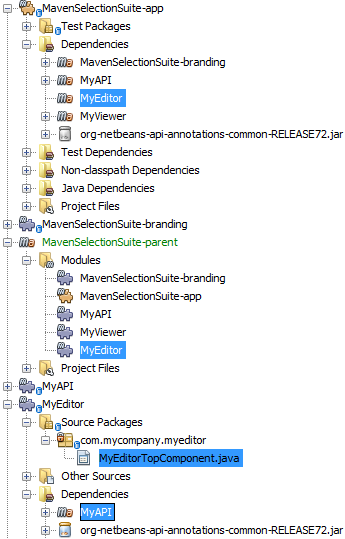
Figure 19. screenshot
-
Use the Palette to drag and drop a Text Field onto the window:
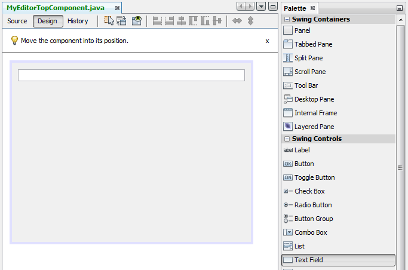
Figure 20. screenshot
-
Switch to the Source tab. At the end of the constructor in the window, include the following code:
Event obj = new Event();
associateLookup(Lookups.singleton(obj));
jTextField1.setText("Event #" + obj.getIndex() + " created at " + obj.getDate());
setDisplayName("MyEditor " + obj.getIndex());
The associateLookup(Lookups.singleton(obj)); line in the constructor will add a new instance of Event to the Lookup of the TopComponent . When the TopComponent is selected, its Lookup is passed into the global context. For more details, see NetBeans Lookup.
|
Make sure to import the correct Event class, that is, com.mycompany.mavenselectionsuite.Event .
-
Change the
@TopComponent.OpenActionRegistrationso that nopreferredIdis defined, as shown below, which means that a new Editor window will open whenever you choose Window | Editor in the menubar:
@TopComponent.OpenActionRegistration(displayName = "#CTL_MyEditorAction")The text field in the component only displays the index value and date from the Event . This will enable you to see that each MyEditor component is unique and that MyViewer is displaying the details of the MyEditor component that has the focus.
Building and Running the Application
Now that the target installation of the IDE is specified, you can use the Run command on the app project.
-
Right-click app project and choose Run. The application starts up, consisting of the NetBeans Platform, together with the custom modules you created.
-
The MyViewer window opens when the application starts and displays the two labels. You can now choose MyEditor from the Window menu, multiple times, to open multiple MyEditor components in the editor area. The MyViewer window will display the details of the currently selected MyEditor component.
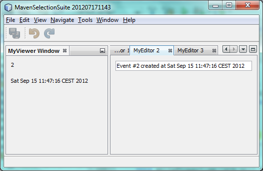
Figure 21. screenshot
This tutorial demonstrated how to create and run a NetBeans Platform application that you create from a Maven archetype. You saw how applications are structured and how you configure a modules POM to specify public packages. Most important of all, you learned how to publish objects into the selection and how to listen for them and update other parts of the application accordingly. For more examples on how to build NetBeans Platform applications, see the tutorials listed in the NetBeans Platform Learning Trail.
See Also
For more information about creating and developing on the NetBeans Platform, see the following resources.
If you have any questions about the NetBeans Platform, feel free to write to the mailing list, dev@platform.netbeans.org, or view the NetBeans Platform mailing list archive.